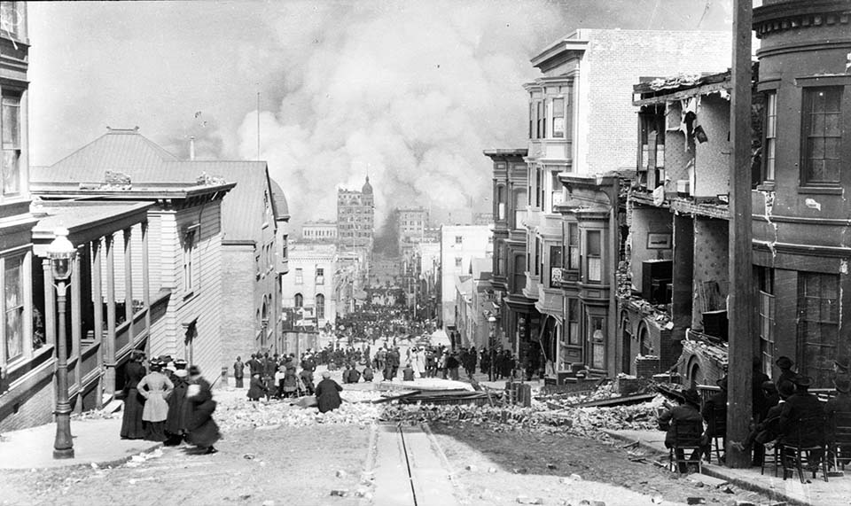
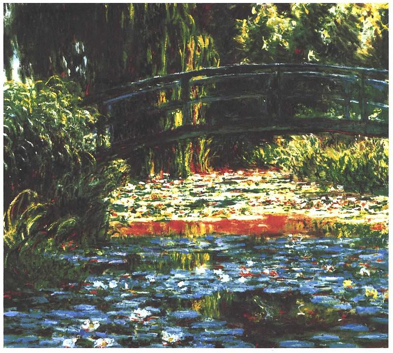
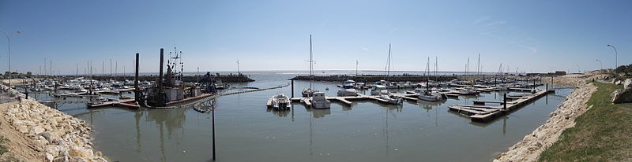

DEFINITION
La photographie est une technique qui permet de créer des images sans l'action de la main,
par l'action de la lumière.
Le terme « photographie » désigne aussi l'image obtenue.
Il désigne également la branche des arts graphiques qui utilise cette technique,
dont le nom signifie étymologiquement « écriture de la lumière ».
La photographie a su tirer parti de nombreuses innovations technologiques et techniques
dans les domaines de l'optique, de la chimie, de la mécanique, de l'électricité, de l'électronique et de l'informatique.

Les qualités d’un bon photographe
Être un bon photographe ne signifie pas seulement connaître la techniquesur le bout des doigts, composer au millimètre et avoir du matos à 10 000€.
Non, il faut aussi certaines qualités humaines.
Evidemment, je ne prétends pas détenir la vérité absolue sur ce qui fait un bon photographe (notamment parce qu’elle n’existe pas :P),
mais je suis convaincu que certaines qualités jouent autant (plus ?) sur vos images que votre maîtrise de la technique.
C’est bien entendu totalement subjectif, et il n’existe pas une réponse universelle à la question « qu’est-ce qui fait un bon photographe ? », évidemment.
- La passion
- La sensibilité
- La patiente
- La curiosité
- la volonté
La couleur

La couleur est la perception visuelle de la répartition spectrale de la lumière visible. Cette sensation prend son origine dans la stimulation de cellules nerveuses spécialisées nommées cônes et situées sur la rétine.
La couleur peut se décrire dans une approche artistique, qui recherche des indications capables de guider les praticiens dans leur perception de la couleur et de l'emploi des pigments pour reproduire ou évoquer la sensation de couleur
dans une approche chimique, qui établit et classe des répertoires de pigments ; dans une approche physique, par l'analyse spectrale ; dans une approche physiologique,
qui relie la perception au système visuel ; dans une approche psychophysique, débouchant sur la colorimétrie et sur la décomposition en composantes permettant une synthèse des couleurs.
La philosophie tente, depuis l'Antiquité grecque, de relier les notions de la couleur.
La couleur permet de coder une information.
Un nombre réduit de nuances évite l'ambiguïté. L'usage des drapeaux a fait qu'à la mer et ailleurs, les couleurs désignent par métonymie le pavillon maritime national, comme en milieu urbain
celui des livrées et uniformes colorés peuvent faire appeler couleurs les vêtements ou accessoires caractéristiques d'un club ou groupe.
Les associations mentales des couleurs leur donnent une symbolique, qui peut varier quelque peu selon les cultures et les individus.

la photographie panoramique
La photographie panoramique est un style de photographie qui consiste à créer des images avec des champs exceptionnellement larges.
Elle se réfère également à des formats relativement larges (voir format APS).
Elles peuvent être créées :
soit, en une fois, avec plusieurs appareils photographiques numériques assemblés en boule, tenus sur une tige, posé sur un trépied ou lancé.
soit, très simplement, avec un appareil photographique numérique, en utilisant la fonction « Panoramique » en temps réel, puis en tournant autour de soi.
soit avec un appareil photographique argentique panoramique tel que le Linhof Technorama 617 ;
soit avec un appareil photographique numérique et un logiciel permettant d'assembler plusieurs vues prises au préalable.
Dans ce cas, le photographe réalise plusieurs vues avec l'appareil fixé sur un trépied. Il tourne l'appareil entre chaque prise de vue en faisant se chevaucher deux vues consécutives. Un logiciel permet ensuite d'assembler les différentes images obtenues.
L'angle de prise de vue à l'horizontal peut atteindre 360°, le choix d'utiliser un grand angle et de mettre l'appareil en format vertical s'impose pour obtenir un format d'image agréable.
Certains appareils numériques permettent la prise de vue sans pied, une partie de l'image précédente étant affichée en surimpression sur la visée suivante, en se rappelant que le photographe doit tourner autour de l'appareil et non l'inverse, sinon des problèmes de parallaxe interviennent lors de l'assemblage.